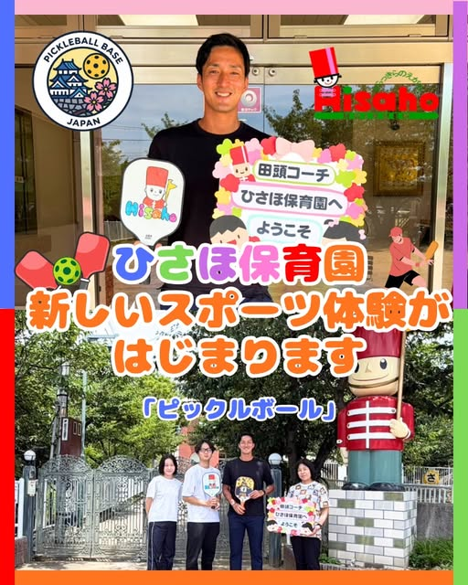
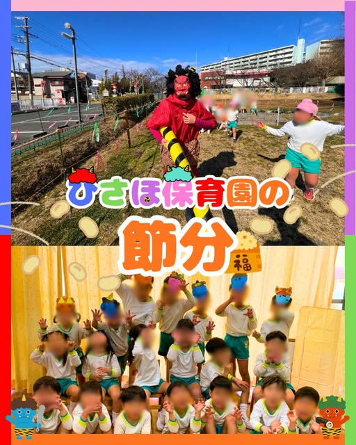

いつも顔が見える距離感
保育士がみんなの名前と表情を把握しやすいから、その子の興味や発達に合わせて、ていねいに声をかけます。
一人ひとりの「好き」と「安心」を大きく育てられる。それが、ひさほ保育園のいちばんの強みです。
保育士がみんなの名前と表情を把握しやすいから、その子の興味や発達に合わせて、ていねいに声をかけます。
年齢ごとの育ちを大切にしながら、異年齢でも関わります。憧れや思いやりが、毎日の中で自然に育ちます。
園の畑で季節の野菜を育て、みんなで収穫。自分の手で育てたものを味わう体験が、食への興味を育てます。
0歳のひよこ組から5歳のらいおん組まで、発達に合わせた毎日を過ごします。
 ひよこ組0歳児
ひよこ組0歳児 ぱんだ組1歳児
ぱんだ組1歳児 りす組2歳児
りす組2歳児 うさぎ組3歳児
うさぎ組3歳児 きりん組4歳児
きりん組4歳児 らいおん組5歳児
らいおん組5歳児体を動かすこと、音を楽しむこと、表現すること。専門の先生と一緒に、遊びの中で「やってみたい！」を広げます。

育てるところから食べるところまで、子どもたちの好奇心を食卓につなげます。

栄養士が季節感のある行事食と、野菜をたっぷり使った献立を毎月作成。おやつも離乳食も手作りです。

スプーンからお箸へ、年齢に合った食具へ無理なく移行。食事のマナーも楽しく身につけていきます。

食物アレルギーには、医師記入の生活管理指導表をもとに除去食・代替食で対応します。
季節と地域を感じる行事を、子どもたちと一緒に大切にしています。




行事の様子や、日々の小さな発見を発信しています。写真をタップすると投稿が開きます。
通常保育に加えて、朝夕の延長保育や土曜保育で、働くご家庭の毎日を支えます。